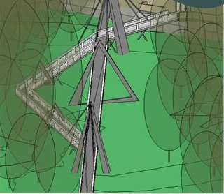
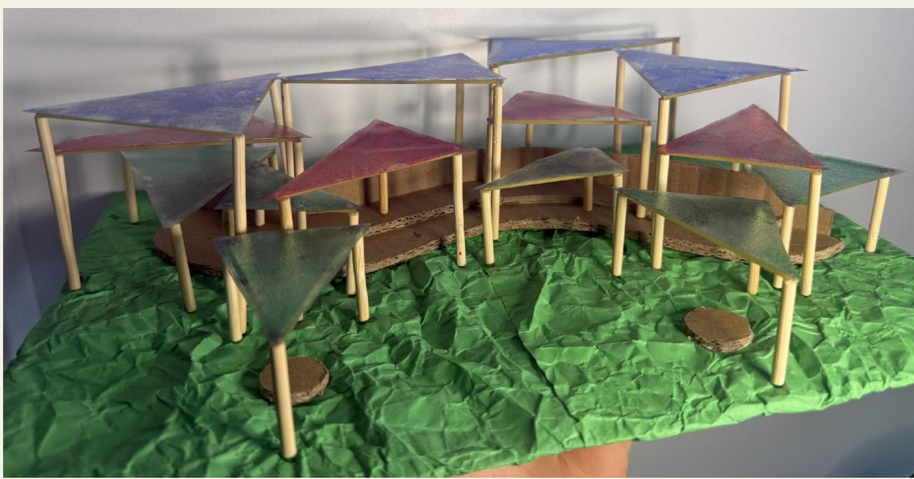

Selected projects — 2025/26

01 · Bridge / structure
Raised Walkway
A cable-stayed route across the field to first-floor level of the Sir William Henry Bragg Building.

02 · Shelter / building
Pavilion
45 steel columns and tinted glass panels arranged, in plan, as St George's dragon.

03 · Wall / foundation
Vertical Barrier
A new design to fill a 20 m gap in the field's stone boundary wall, with foundation calculations.